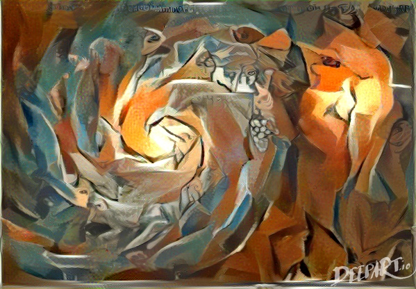

PICASSO¶
{kind=link}
Image of the Whirlpool Galaxy (M51) rendered from the stylistics elements of Les Demoiselles d’Avignon (Pablo Picasso, 1907) with DeepArt.io.
Python Inpainter for Cosmological and AStrophysical SOurces¶
This package provides a suite of inpainting methodologies aimed at reconstructing holes on images (128x128 pixels) extracted from a HEALPIX map.
Three inpainting techniques are included in PICASSO and can be divided into two main groups:
diffusive-based methods (Nearest-Neighbours)
learning-based methods that rely on training DCNNs to fill the missing pixels with the predictions learned from a training data-set (Deep-Prior and Generative Adversarial Networks, GAN ).
For further details see Puglisi et al. (2020).
So far, PICASSO has been tested on inpainting maps of two polarized emissions in the microwave regime: Synchrotron and Thermal Dust. GAN weights have been derived by training on images of each emission and can be found at : GAN weights.
Install¶
git clone https://github.com/giuspugl/picasso
cd picasso
python setup.py install
Usage¶
Scripts are provided to the user in order to perform:
projection from full sky HEALPIX maps to flat thumbnails images image_stacker
inpainting on GPUs inpaint_gpu
parallel inpainting on multiple processes (with
mpi4py) inpaint_mpiprojection from flat images to HEALPIX inpaint_gpu
{kind=link}
An example of a crop images (leftmost panel) inpainted with the three methods in PICASSO.
Support¶
If you encounter any difficulty in installing and using the code or you think you found a bug, please open an issue.